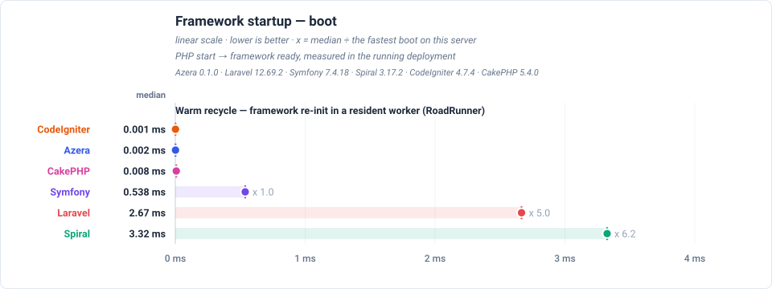
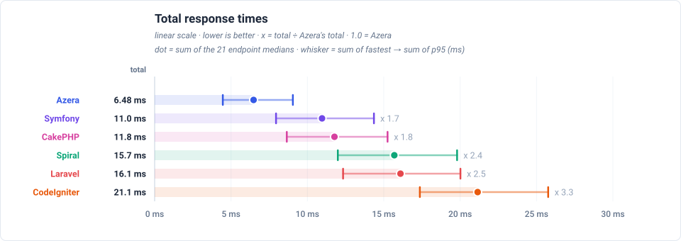
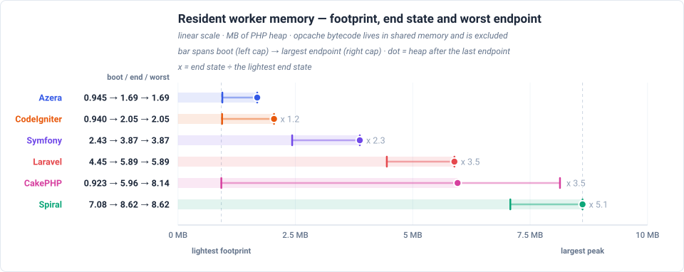
Feature benchmarks
GET / — dispatches a plain request through the router and returns a rendered template — no database access.
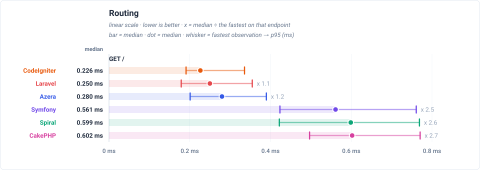
GET /items — loads one page of the 1,000 seeded rows through each framework's ORM / Active Record layer: 20 items plus a COUNT for the pagination total.
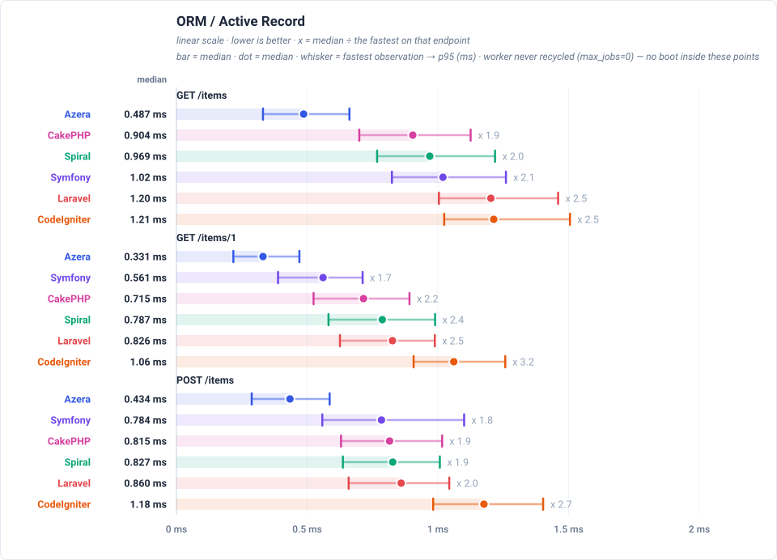
GET /items-qb — builds the same page of 20 items with each framework's query builder instead of its ORM, so the two data-access styles can be compared directly.
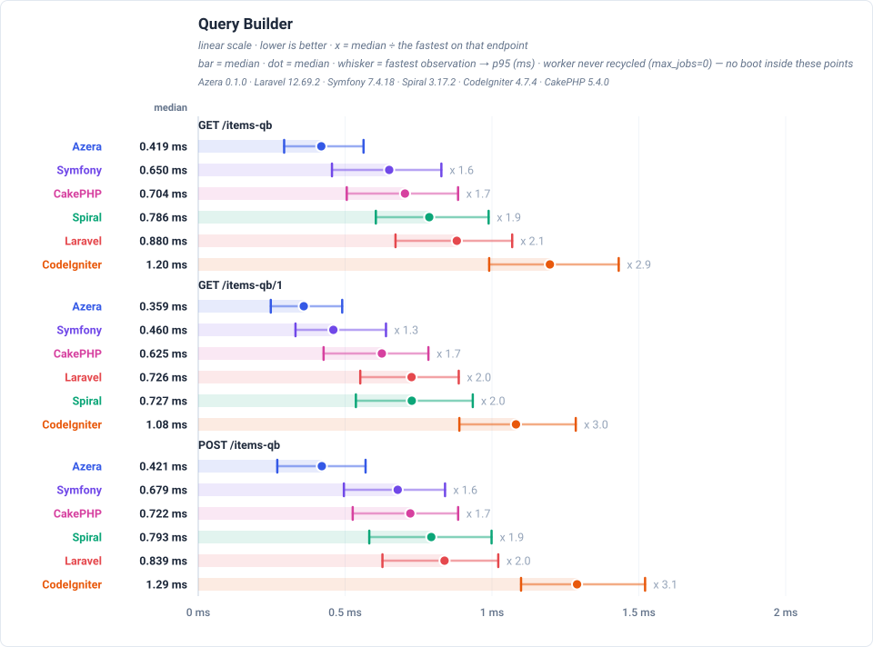
GET /api/items — serves the same page of items as a JSON response rather than HTML, which adds serialization to the ORM work.
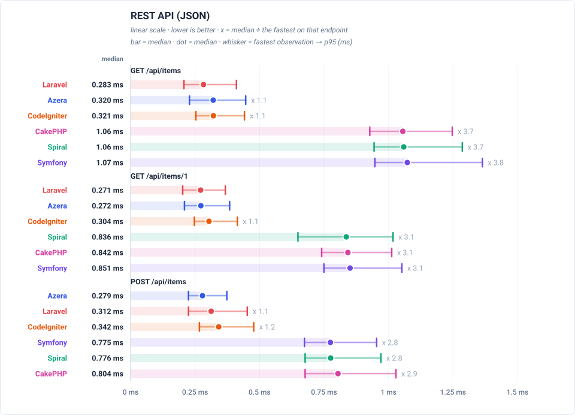
GET /features/aop — runs a request through an interceptor pipeline — logging, retry and middleware aspects wrapped around the handler. Only frameworks with an AOP layer take part.
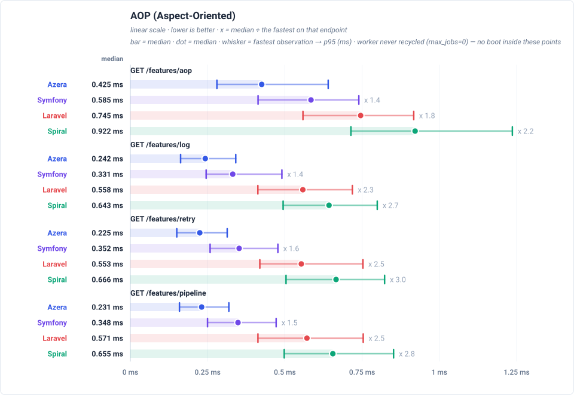
GET /features/cache — reads a COUNT(*) over the 1,000 rows through the framework's cache with a 10-second TTL, so a hit costs no database work and a miss runs the query.
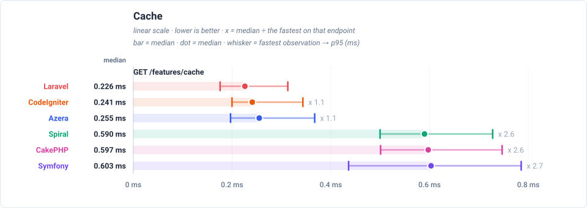
GET /features/db-events — inserts one event row per request and lets the framework's database events fire around that write.
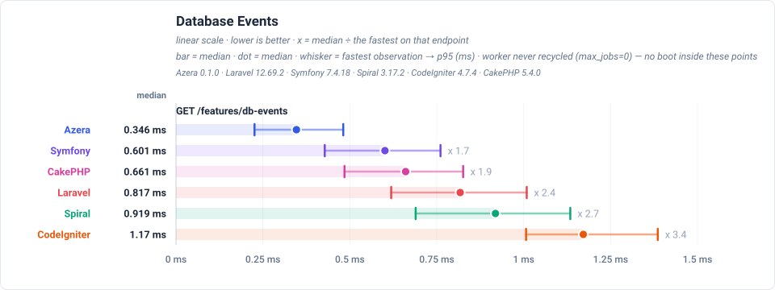
GET /features/events — dispatches an in-process event to registered listeners.
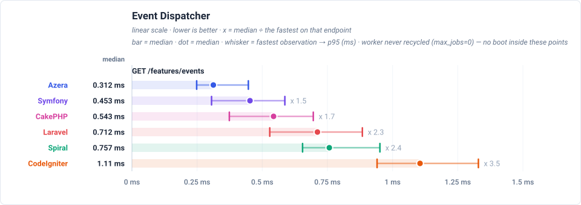
GET /features/validation — validates a payload with the framework's own validator.
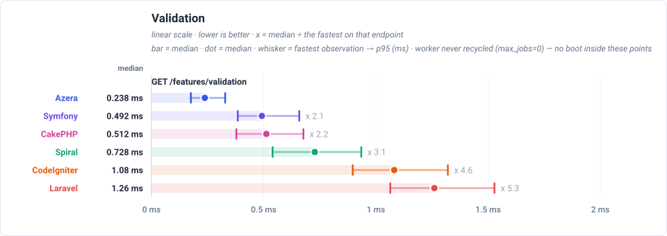
GET /features/config — resolves a value from the framework's config repository.
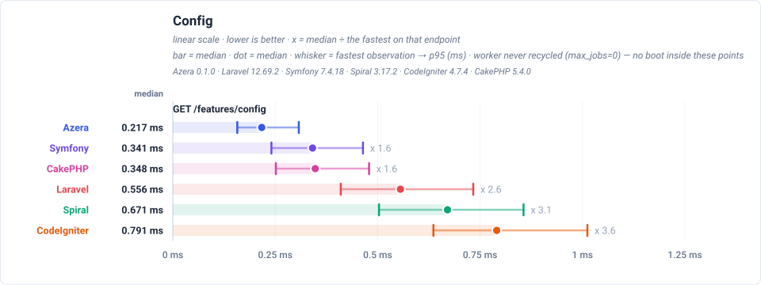
GET /features/request-scoped — resolves a service scoped to the request from the container.
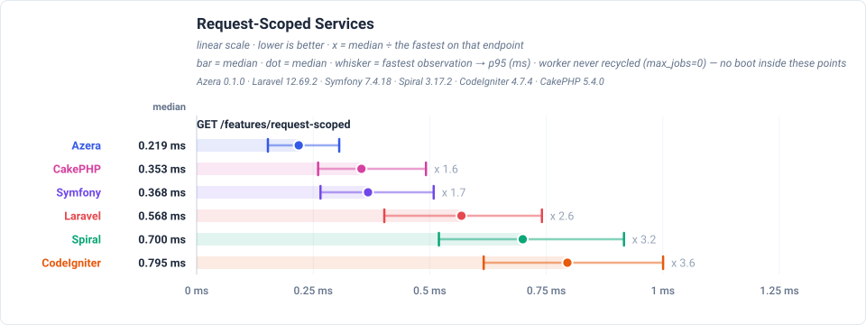
GET /features/rate-limit — checks a cache-backed rate limiter.
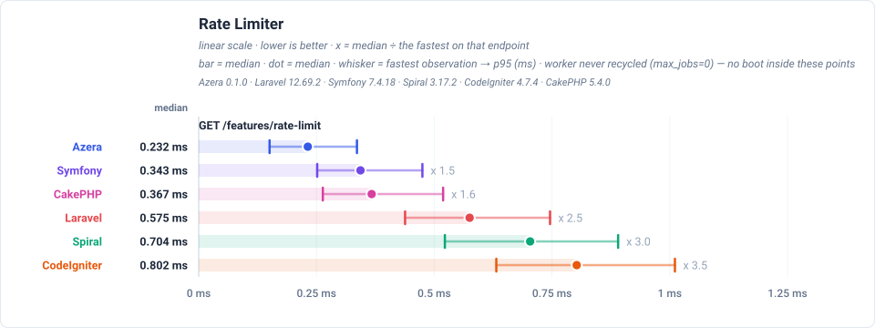
Latency by endpoint (ms, trimmed mean — lower is better) — the worker is never recycled (max_jobs=0), so each number is the measured request with no boot in it
| Request | Workload | Azera | Laravel | Symfony | Spiral | CodeIgniter | CakePHP |
|---|---|---|---|---|---|---|---|
GET / | no DB — routing + template only | 0.260 | 0.597 | 0.424 | 0.667 | 0.893 | 0.486 |
GET /items | 20 of 1000 items (page 1, + COUNT) | 0.494 | 1.22 | 1.07 | 1.01 | 1.26 | 0.964 |
GET /items/1 | 1 item by id | 0.340 | 0.851 | 0.601 | 0.791 | 1.12 | 0.710 |
POST /items | 1 row upserted (sentinel #999999) | 0.471 | 0.885 | 0.788 | 0.853 | 1.21 | 0.875 |
GET /items-qb | 20 of 1000 items (page 1, + COUNT) | 0.448 | 0.901 | 0.670 | 0.813 | 1.23 | 0.761 |
GET /items-qb/1 | 1 item by id | 0.341 | 0.749 | 0.504 | 0.762 | 1.13 | 0.655 |
POST /items-qb | 1 row upserted (sentinel #999997) | 0.434 | 0.869 | 0.694 | 0.810 | 1.34 | 0.730 |
GET /api/items | 20 of 1000 items as JSON | 0.323 | 1.07 | 0.708 | 0.852 | 1.07 | 0.670 |
GET /api/items/1 | 1 item by id as JSON | 0.297 | 0.854 | 0.522 | 0.732 | 1.03 | 0.651 |
POST /api/items | 1 row upserted (sentinel #999998) | 0.329 | 0.791 | 0.734 | 0.819 | 1.12 | 0.771 |
GET /features/aop | no DB — interceptor pipeline | 0.441 | 0.785 | 0.624 | 0.949 | — | — |
GET /features/cache | COUNT(*) of 1000 rows, cached 10s (miss = query) | 0.233 | 0.623 | 0.376 | 0.694 | 0.816 | 0.407 |
GET /features/log | no DB — buffered log handlers | 0.237 | 0.580 | 0.387 | 0.691 | — | — |
GET /features/retry | no DB — retry policy | 0.227 | 0.608 | 0.356 | 0.703 | — | — |
GET /features/pipeline | no DB — middleware pipeline | 0.244 | 0.594 | 0.390 | 0.700 | — | — |
GET /features/db-events | 1 event row INSERTed per request | 0.347 | 0.841 | 0.611 | 0.939 | 1.20 | 0.681 |
GET /features/events | no DB — in-process listeners | 0.326 | 0.746 | 0.450 | 0.797 | 1.17 | 0.539 |
GET /features/validation | no DB — validator run | 0.257 | 1.31 | 0.538 | 0.729 | 1.12 | 0.512 |
GET /features/config | no DB — config lookup | 0.229 | 0.592 | 0.399 | 0.678 | 0.838 | 0.360 |
GET /features/request-scoped | no DB — scoped service resolve | 0.230 | 0.585 | 0.386 | 0.724 | 0.817 | 0.376 |
GET /features/rate-limit | no DB — cache-backed limiter | 0.246 | 0.585 | 0.360 | 0.725 | 0.824 | 0.393 |
Server floor — real RoadRunner over loopback: a bare resident worker that renders a fixed string (floor-rr) measures the IPC + server floor every row below also pays. Only differences larger than this floor are framework differences.